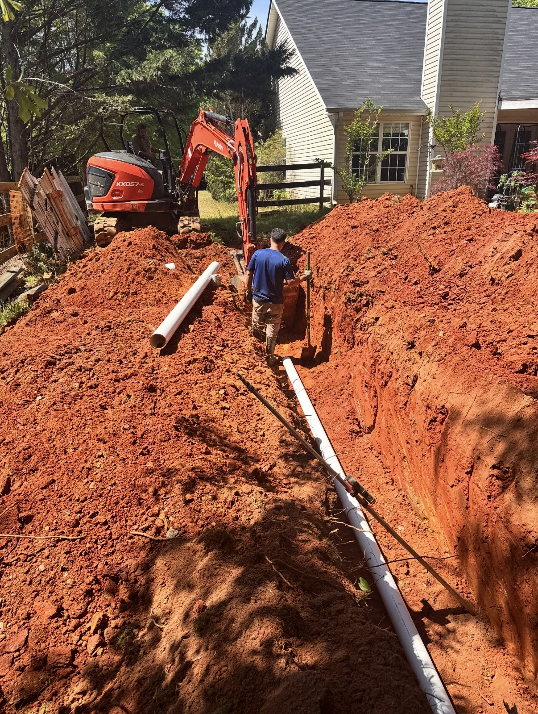
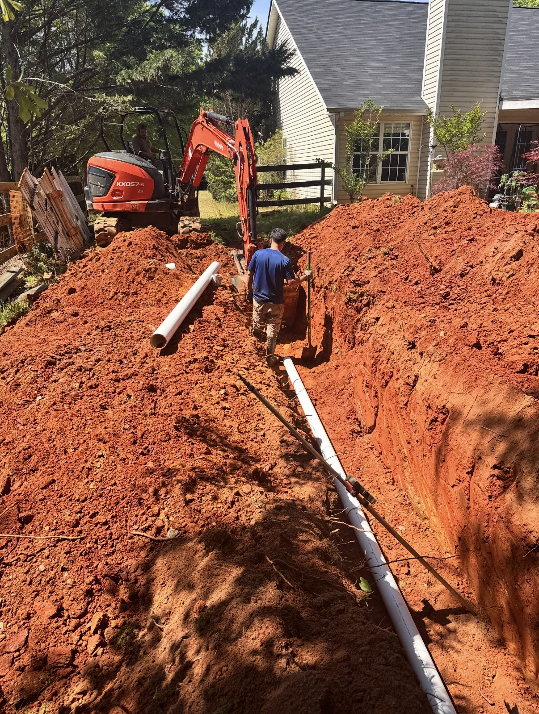

ALLCON delivers professional grading, land-clearing, and drain system services tailored to your property’s needs. We handle driveways, building pads, brush removal, drainage solutions, and general dirt work to ensure your land is properly prepared and ready for construction or use.

ALLCON provides professional underground stormwater retention system installation for both residential and commercial properties. These systems help manage runoff, prevent erosion, and comply with drainage requirements while maximizing usable land. We install chamber systems, pipe galleries, and engineered retention solutions tailored to your site conditions and local regulations.
Whether you're preparing for new construction or upgrading an existing drainage system, our team ensures proper excavation, grading, and installation for long-lasting performance.
 
